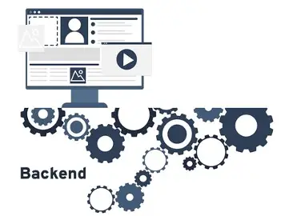
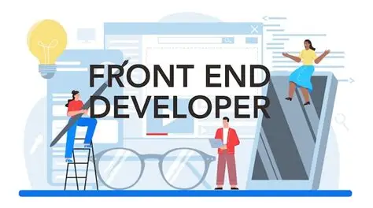

Анатомія веб-додатку
Сучасний цифровий світ неможливо уявити без веб-сайтів та веб-додатків, які супроводжують нас щодня. Веб-розробка — це захоплюючий процес створення інтернет-ресурсів, що поєднує в собі творчість дизайну та складну логіку програмування. Кожен проєкт починає своє життя з ідеї, яка згодом перетворюється на структурований код.
Кожен користувач, відкриваючи улюблений браузер, бачить лише вершину айсберга — інтерфейс та візуальне оформлення. Проте за зручність і швидкість роботи сайтів відповідає величезна кількість прихованих від очей механізмів. Архітектура сучасних веб-додатків зазвичай поділяється на дві основні складові частини.
Кожен користувач, відкриваючи улюблений браузер, бачить лише вершину айсберга — інтерфейс та візуальне оформлення. Проте за зручність і швидкість роботи сайтів відповідає величезна кількість прихованих від очей механізмів. Архітектура сучасних веб-додатків зазвичай поділяється на дві основні складові частини.

